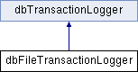

#include <database.h>
Inheritance diagram for dbFileTransactionLogger:

Public Types | |
| enum | RestoreStatus { rsOK, rsCRCMismatch, rsReadFailed, rsTableNotFound, rsOIDMismatch } |
Public Member Functions | |
| virtual bool | insert (dbTableDescriptor *table, oid_t oid, dbRecord const *dbsObj, void const *appObj) |
| virtual bool | update (dbTableDescriptor *table, oid_t oid, dbRecord const *dbsObj, void const *appObj) |
| virtual bool | remove (dbTableDescriptor *table, oid_t oid) |
| virtual bool | commitPhase1 () |
| virtual void | commitPhase2 () |
| virtual void | rollback () |
| bool | open (char_t const *path, int flags=dbFile::no_sync, bool crc=true) |
| void | close () |
| RestoreStatus | restore (dbDatabase &db, size_t &nTrans) |
Detailed Description
Implementation of transaction logger wrting transaction into the file
Member Function Documentation
| void dbFileTransactionLogger::close | ( | ) |
Close transaction log
| virtual bool dbFileTransactionLogger::commitPhase1 | ( | ) | [virtual] |
Perform first phase of transaction commit
- Returns:
- true if commit is approved, false otherwise
Implements dbTransactionLogger.
| virtual void dbFileTransactionLogger::commitPhase2 | ( | ) | [virtual] |
Perform second phase of transaction commit
Implements dbTransactionLogger.
| virtual bool dbFileTransactionLogger::insert | ( | dbTableDescriptor * | table, | |
| oid_t | oid, | |||
| dbRecord const * | dbsObj, | |||
| void const * | appObj | |||
| ) | [virtual] |
Insert new object
- Parameters:
-
table descriptor of table in which object is inserted oid object identifier dbsObj database (packed) object body appObj application object body
- Returns:
- true if insert is approved, false otherwise
Implements dbTransactionLogger.
| bool dbFileTransactionLogger::open | ( | char_t const * | path, | |
| int | flags = dbFile::no_sync, |
|||
| bool | crc = true | |||
| ) |
Open transaction logger
- Parameters:
-
path path to the transaction log file flags dbFile::OpenFlags. Use dbFile::truncate flag to start new log crc whether to caclulate CRC for transaction body or not
| virtual bool dbFileTransactionLogger::remove | ( | dbTableDescriptor * | table, | |
| oid_t | oid | |||
| ) | [virtual] |
Delete object
- Parameters:
-
table descriptor of table oid object identifier
- Returns:
- true if remove is approved, false otherwise
Implements dbTransactionLogger.
| RestoreStatus dbFileTransactionLogger::restore | ( | dbDatabase & | db, | |
| size_t & | nTrans | |||
| ) |
Restore trasnaction from this log
- Parameters:
-
db restored database nTrans number of restored transactions
- Returns:
- restore status
| virtual void dbFileTransactionLogger::rollback | ( | ) | [virtual] |
Rollback transaction
Implements dbTransactionLogger.
| virtual bool dbFileTransactionLogger::update | ( | dbTableDescriptor * | table, | |
| oid_t | oid, | |||
| dbRecord const * | dbsObj, | |||
| void const * | appObj | |||
| ) | [virtual] |
Update object
- Parameters:
-
table descriptor of table oid object identifier dbsObj database (packed) object body appObj application object body
- Returns:
- true if update is approved, false otherwise
Implements dbTransactionLogger.
The documentation for this class was generated from the following file:
Generated on Sun Aug 22 2010 23:57:51 for FastDB by
 1.7.1
1.7.1